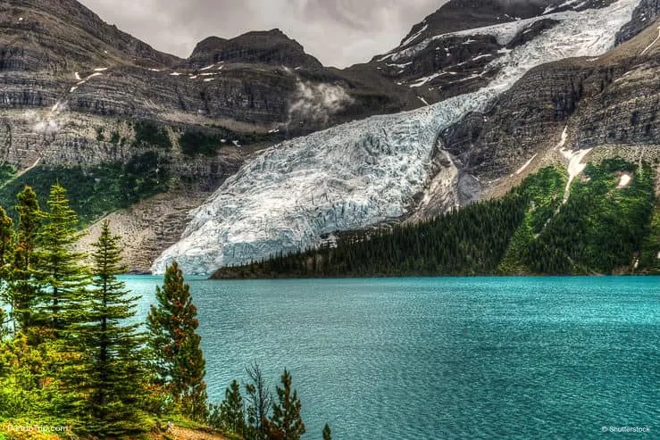
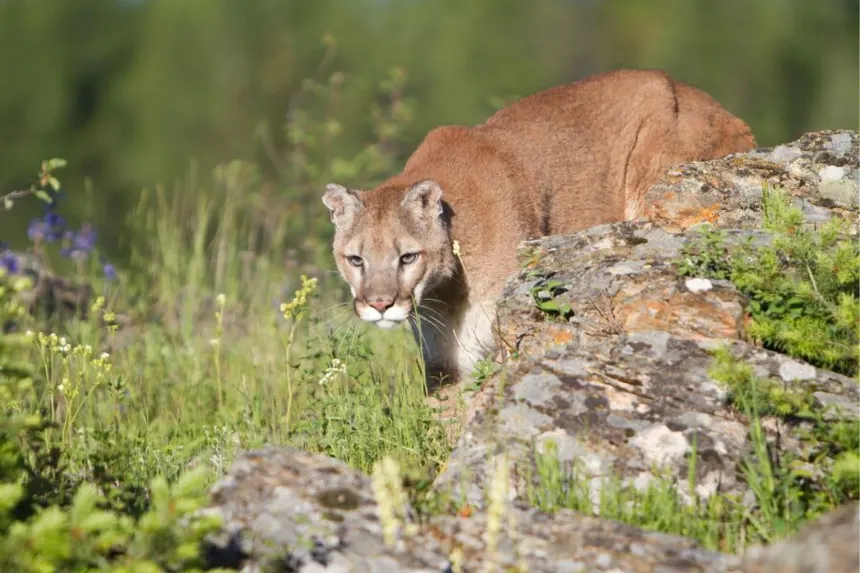
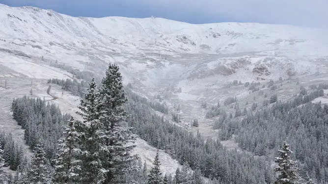

Rocky Mountains, USA
The Rocky Mountains are an iconic mountain range in North America, stretching from Canada to New Mexico. These mountains are a paradise for outdoor enthusiasts, offering a wide range of activities like hiking, skiing, and wildlife viewing.
Known for their rugged peaks, alpine lakes, and diverse ecosystems, the Rockies provide stunning views and an unforgettable adventure.

Rocky Mountain Trail
The Rocky Mountain Trail offers some of the most stunning landscapes, from snow-capped peaks to wildflower meadows. This trail attracts hikers of all levels, offering both challenging and relaxing routes.
It's a must-visit for anyone wanting to experience the rugged beauty of the Rockies up close.
Wildlife in the Rockies
The Rocky Mountains are home to a diverse array of wildlife, including elk, moose, black bears, and bighorn sheep. Watching these majestic animals in their natural habitat is a highlight for many visitors.
From observing birds to spotting a bear from afar, the Rockies provide endless opportunities to experience wildlife in the wild.


Winter in the Rockies
The Rocky Mountains are a winter wonderland, perfect for skiing, snowboarding, and other winter sports. Whether you're an expert skier or a first-timer, the Rockies offer a variety of slopes to suit all abilities.
The winter months also provide a tranquil atmosphere, with quiet snow-covered landscapes and crisp mountain air.
Leave a Comment